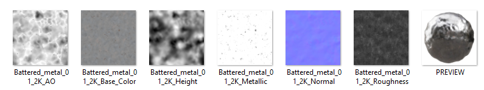
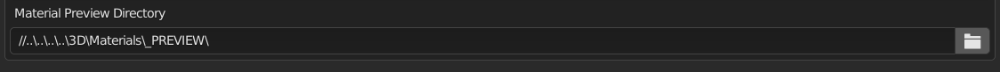
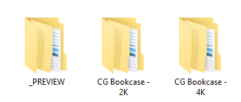
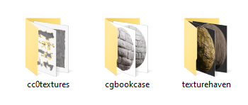
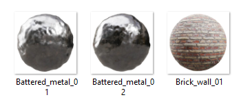
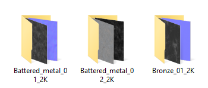
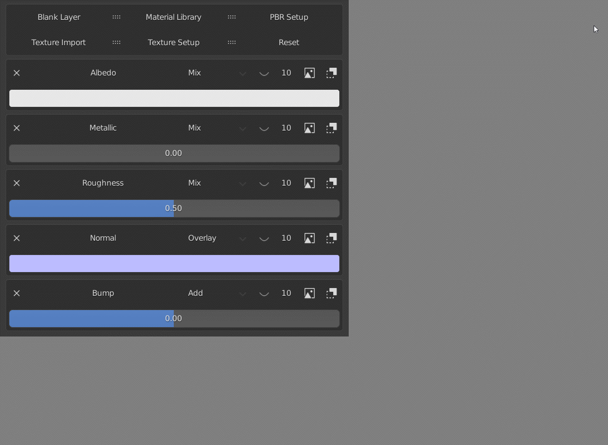

Setting Up Material Library Previews
There are two ways to set up material previews. The first method is the easiest and more straight forward. However, both methods may take some time to set up depending on the current state of your material libraries.
Note that the first method will be supported for later versions of the addon but the second one will most likely not be present in the next version.
If the libraries are not setup and the preview property is still set in the addon prefernces, the first image in the relevant folder will be used as a preview for the material.
Method 1
The first method requires you to have the preview in the same folder as the maps named "PREVIEW" in all CAPS. There is currently support for .png and .jpg file extensions.

Method 2
This method has been tested with libraries and their original names from CC0 Textures, CG Bookcase and Texture Haven, it is not guaranteed to work with libraries from other websites. For other websites, we recommend using the first method.
Blender Set Up
You will need to locate the directory with all your material previews inside of the addon preferences in Blender.

Directory Location
Ensure to not rename the library location otherwise you will need to update it within Blender as well.

Inside The Directory
You will need to create different folders for the preview libraries within the folders, what you name them does not matter but will help with organizing. There is an exception when it comes to libraries from Texture Haven, you will need to set the folder name to "texturehaven" for the previews to be properly rendered.
The libraries below have their previews set by website.

Inside The Preview Libraries
Inside each of the libraries is where the images should be located, the addon currently supports .png and .jpg file extensions.
For the previews to be found, the image will need to have a similar name as the corresponding material library.
The resolution of the libraries will be needed at the end of the folder library but not the image for the previews to work, i.e., the folder name would be "Battered_metal_01_2K" and the image would be "Battered_metal_01". The images below will render correctly and properly show the material preview.
 
Result
Once properly set up, the material previews will be shown.
